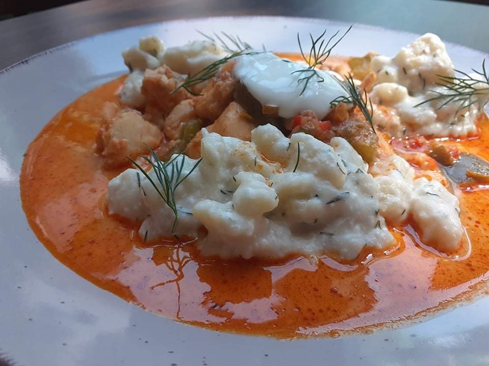

Halušky podľa @bistrovasmenu — Normy Jedál
Paprikáš zo sumca, tvarohové halušky s kôprom, crème fraîche / Harcsapaprikás kapros túrós galuskával, crème fraîche 🤩😋
.
.
#bistrovas #obedovemenu #dennemenu #fish #harcsapaprikás #cremefraiche #halusky #dill #tvarohove #galuska #túrós #foodporn #food #foodphotography #foodlover #foodstagram #cheflife #lunch #lunchtime #dinner #dinnertime #kosice #kassa #ryby #delicious #deliciousfood #yummy #bonappetit #eating #gastronomia